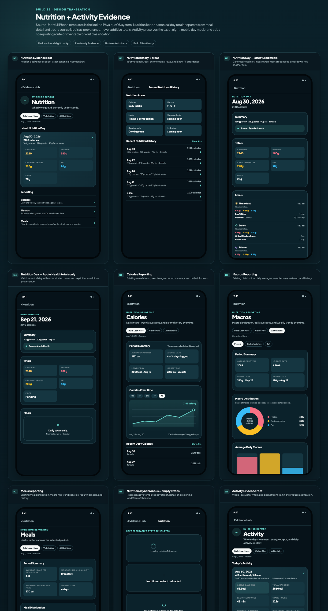
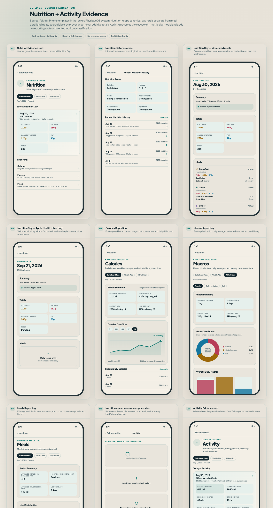
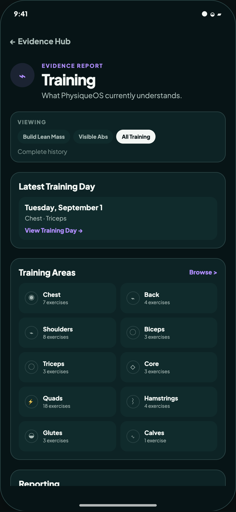
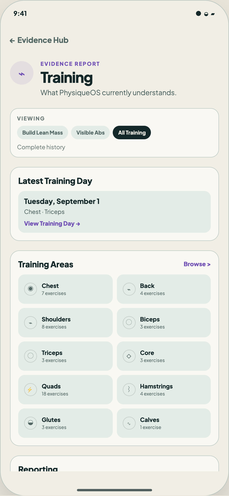

Dark coverage
Nutrition N1–N8 · Activity A1–A7

Mineral-light coverage
Exact content and geometry parity

Fifteen source-faithful templates cover both independent hierarchies. Dark and mineral-light retain identical information, values, routes, and geometry. Nutrition provenance is non-additive; Activity gains no invented reporting or workout-classification UI.
Nutrition N1–N8 · Activity A1–A7

Exact content and geometry parity

No bucketing, merging, prioritizing, pagination, or hiding. Exact live order/counts: Chest 7, Back 4, Shoulders 8, Biceps 3, Triceps 3, Core 3, Quads 18, Hamstrings 4, Glutes 3, Calves 1.

